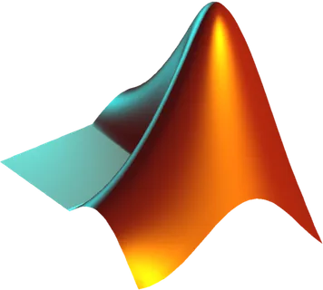
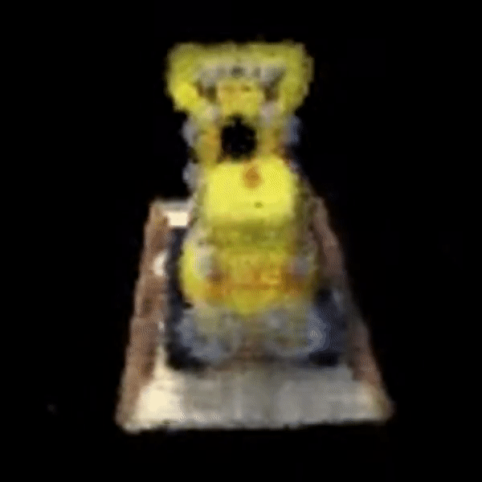

Aabha Tamhankar
Robotics Engineer
My educational values are deeply influenced by the profound insights of the Dunning-Kruger Effect. Embracing a perpetual cycle of awareness, learning, and growth, I navigate the intricate terrain of Robotics with humility and curiosity. Join me on this transformative educational odyssey, where every challenge is an opportunity, and every lesson propels us toward mastery.
Welcome to My Robotics Journey!
Education
Master's in Robotics Engineering
Worcester Polytechnic Institute
GPA: 4.00
Bachelor's of Technology in Mechanical Engineering
Specialization in Robotics and Automation
MIT World Peace University, Pune
GPA: 9.25/10.0
Work

MathWorks, Natick - EDG Intern
Collaborated with the autonomous systems team to optimize the quadratic interpolation distance algorithm for Navigation Toolbox. Proposed a mathematical algorithm to find signed distance from a query point to the nearest obstacle for a 3D map
Devised an Automatic Shirodhara Medical Machine by using local PIC, PIC boards, and PICkit3 programmer/debugger, along with creating CAD model for the device using SolidWorks. Assisted in CAD designs using SolidWorks and Autodesk Inventor for the design of Engine Block Palette, Crowder Assemble, Conveyor, etc
Tailored and improved the KUKA robot language code to optimize machining operations by adjusting temperature control, coolant quality enhancement, and tool tip angle optimization. Successfully analyzed and implemented various strategies resulting in a remarkable 37% improvement in line efficiency
RJD's, Nashik - Front-End Web Developer Intern
Contribted to design and development of commecial websites using HTML, CSS, ReactJS. Assisted in content writing regarding Java for an educational website
Research Experience
Automation of Lumbar Puncture Process
•Creating an advanced image processing pipeline to pinpoint precise needle entry sites in lumbar puncture procedures.
• Processing ultrasound images using OpenCV to segment regions in lumbar data.
• Developing a state-of-the-art computer vision algorithm that harnesses ultrasound images and the probe poses to generate a 3D point cloud using PCL libraries in Python.
Projects

SfM-NERF
Reconstruction of a 3d scene from a set of images with different view points (camera in motion).
Zhang's Camera Calibration
Implemented automatic efficient and robust camera calibration presented by Zhengyou Zhang in this paper.